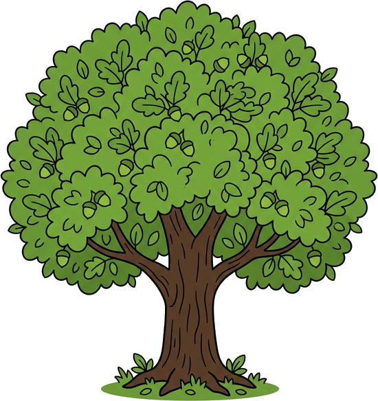
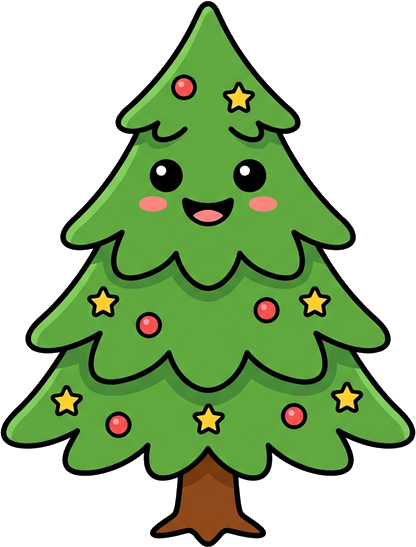

We bevinden ons momenteel vol trots en overgave in de uitgebreide voorbereidingsfase van ons initiatief in Hellendoorn. Achter de schermen wordt hard gewerkt aan de unieke samensmelting van wonen, warme zorg, en de overweldigende natuur. Ontdek onze op handen zijnde plannen voor de toekomst.
Zodra onze poorten openen, zal Erve Meander het levende hart zijn waar de generaties 16 tot 86 jaar elkaar ontmoeten. Onze visie is diep ontleend aan de natuur; zoals rivier de Regge ongedwongen haar weg baant door het landschap, zo vormen wij straks een organische leefgemeenschap.
We sleutelen momenteel aan de kaders van een erf waar jongeren en ouderen elkaar in de toekomst dagelijks zullen versterken. Dit voorkomt eenzaamheid en biedt een uiterst zachte landing in de maatschappij gecombineerd met geborgen dagbesteding en veilige wijkzorg.
Achter de tekentafels buigen wij ons over een liefdevol en ijzersterk concept voor het Sallandse landschap.
Wanneer de realisatie van Erve Meander is voltooid, bieden we een innovatief thuis waar onvoorwaardelijke, professionele 24/7 ondersteuning gegarandeerd is via onze Stichting. In deze essentiële voorbereidingstijd bouwen we aan de stevige fonderingen van onze Raad van Bestuur, het toewijzingsbeleid en de integratie met medische buurtvoorzieningen.
We leggen straks niet alleen de stenen van een klimaatpositief Norges Hus, maar we bouwen voornamelijk aan wederzijds vertrouwen. Onze robuuste plannen waarborgen dat eenzaamheid geen plaats krijgt, maar dat de warmte van de naaste buurman of de actieve beheerder op het erf overal voelbaar zal zijn.
Hoewel we nu nog in de planningsfase zitten, dromen wij van de faciliteiten die onze community in de toekomst rijk zal zijn. Dit is wat we straks voor ogen hebben.
Onze ambitie is de realisatie van een prachtige, kleurrijke bloementuin. Een rustpunt waar de toekomstige bewoners samen met vrijwilligers bloemen kweken voor lokaal gebruik, wat zometeen de perfecte ontmoetingsplek zal vormen.
We voeren momenteel verkenningen uit met lokale en regionale scholen om Erve Meander straks als erkend leerwerkbedrijf in te richten. Hier hopen we stages aan te bieden in duurzaam bouwen en maatschappelijk werk.
Op de tekentafel ligt een ruime opzet voor een ecologische moestuin. Het doel is dat bewoners, ongeacht hun leeftijd of fysieke gesteldheid, in de toekomst samen zaaien en oogsten. Dit bevordert vitale voeding en trots.
"Goede voorbereiding vergt een gedragen gemeenschap."
Zelfs in deze beginfase hebben we steun hard nodig. Of het nu gaat om denkkracht, maatschappelijke steun of financiële donaties voor de oprichtingskosten; uw warme input als sympathisant brengt de realisatie van onze visionaire zorggemeenschap nóg sneller dichtbij.
Steun Onze Voorbereiding